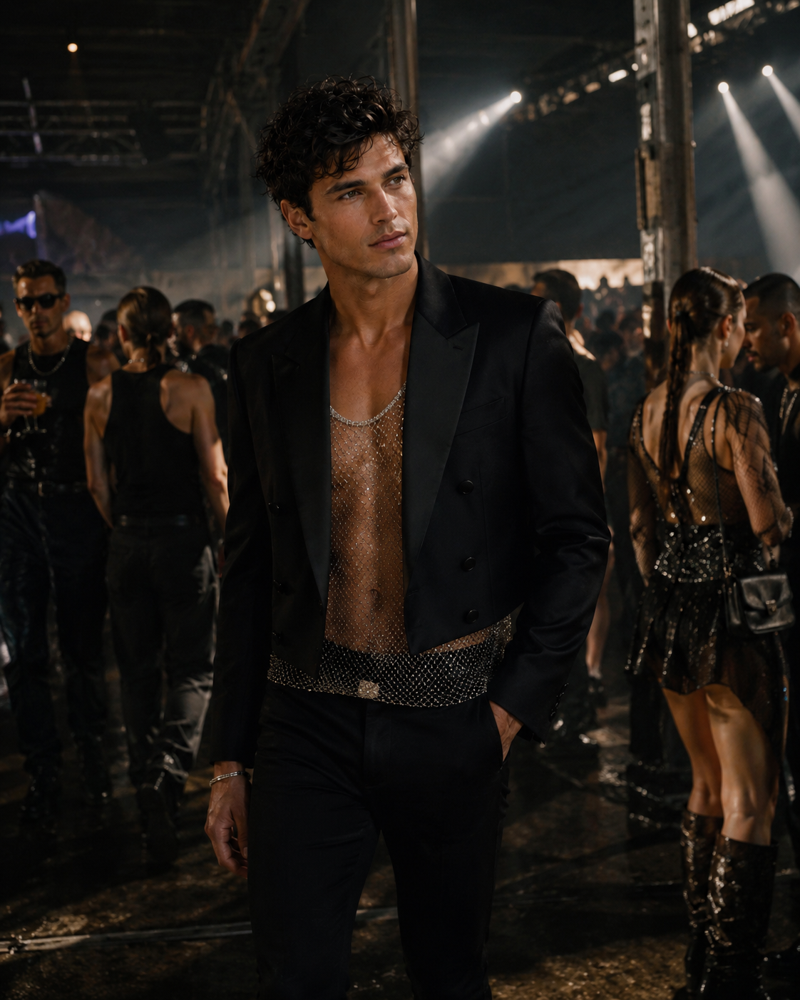
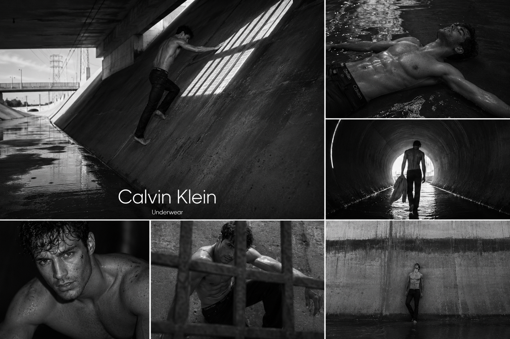
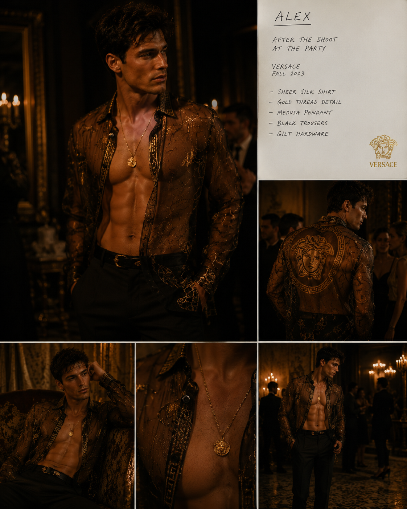

Childrenswear
Burberry Childrenswear, Bonpoint, Ralph Lauren Children's, Hermès, Baby Dior and editorial work across British and international titles.

Campaign. Runway. Editorial. Fourteen years in fashion.
Alex began professional childrenswear at eight, became a fashion-week fixture at thirteen and walked his first runway at fourteen. Every September and January circuit since has made fashion the continuous spine of his public career.
Burberry Childrenswear, Bonpoint, Ralph Lauren Children's, Hermès, Baby Dior and editorial work across British and international titles.
Burberry, Polo Ralph Lauren, Hermès, Zegna, Thom Browne, Tod's, Acne Studios and Brunello Cucinelli as the work moves into adult top tier.
Dior Men, Versace, Calvin Klein, Saint Laurent, Prada, Loewe, Bottega Veneta, Loro Piana and returning houses from the earlier archive.

Released worldwide on 11 August 2025. Stark wet black-and-white stills and film place Alex against monumental curved concrete with water running through the space. The single defined campaign reached outdoor, transport, retail, television, streaming, print and social in every principal market.


A single Luca Guadagnino-directed fragrance film and stills campaign set over one night in Paris.
A worldwide wet black-and-white campaign across outdoor, retail, screen, print and social.
British Vogue, L'Uomo Vogue, Vogue Hommes International, Esquire, AnOther Man, W, Dazed, V and L'Officiel Hommes.